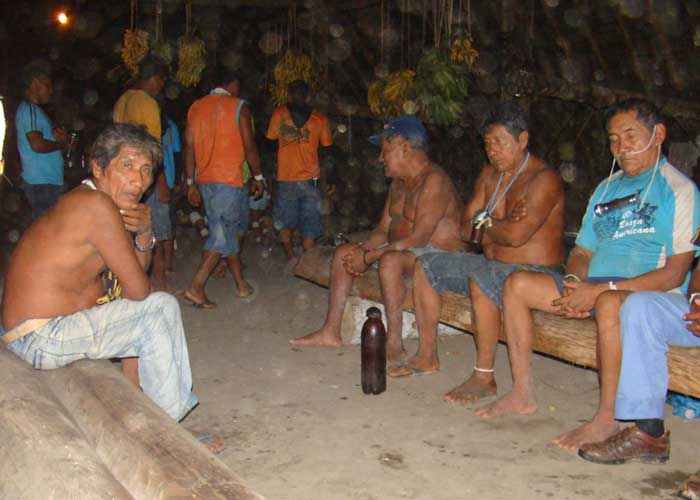

Indigenous Leadership in the Javari Basin, Amazonia
My first major anthropology research project was to work with Marubo people in the Javari River Basin (Brazil). I worked with both traditional elders in the remote interior villages, and younger political organizers living in towns, in order to understand Indigenous ideals, goals, and practices of leadership.
I began my work in Atalaia do Norte (Amazonas, Brazil), where I learned about the work being done by members of CIVAJA, the Indigenous Council of the Javari Basin. This organization brought together, at that time, members of four different Indigenous nations, the Marubo, Matis, Matses, and Kanamari. I worked especially with the Marubo leaders, Clovis Rufino and Manoel Barbosa, to understand the organization's history, goals, and methods of working. I learned a lot about their work to secure land rights, health care, education, transportation, and communication for the Indigenous peoples of the Javari Basin.
I then went up the Javari and Curuçá Rivers and spent seven months living in the village of Maronal on the upper Curuçá. There, I worked with and observed the village leader, Alfredo Barbosa. I lived with Alfredo's brother, José, himself an important leader. I learned how traditional elders lead their villages by organizing daily work including agricultural, hunting, and fishing work, as well as by working as traditional healers and organizing ceremonies and feasts.
I returned to Atalaia for three months to attend α meeting attended leaders from all the peoples that formed part of CIVAJA. They had gathered to hear and approve a proposal for the formal establishment of a legal Indigenous territory in the Javari Basin.
Finally, I spent three more months visiting the villages of the middle Curuçá River and returning to the upper Curuçá to learn more from the traditional elders. I was fortunate enough at this time to see the Akoya ceremony, in which a new ceremonial drum is made from a single tree trunk and hung in a traditional longhouse.

DIGITAL PRESERVATION OF SPECIALIZED INDIGENOUS LANGUAGE REGISTERS
My largest ongoing project is to design and create a digital repository for Indigenous Amazonian cultural materials. This project is rooted in my background in anthropology and language documentation. I have conducted nearly two years of fieldwork in Amazonia. During these fieldwork episodes, I have made over 100 hours of audio recordings, over 25 hours of video recordings, hundreds of photographs, and textual materials including transcriptions and translations of Indigenous narratives. I now plan to make these materials available to the originating communities using an open source digital repository application.
During my first fieldwork, I used some analog processes, including film photography, to document Indigenous language and culture. Afterwards, I digitized all the analog media, moved the digital files to a hard drive, and returned to the host community. I repatriated all collected audio, video, photographic, and textual materials, donating the hard drive to the host community.

The people I worked with are called the Marubo. They live in the Javari River basin, in Brazil, near the border with Peru. Marubo people have a rich corpus of sung traditional narratives called saiti. These narratives range from short songs about fifteen minutes long, to songs that take days or even weeks to complete. At the time of my fieldwork, these narratives were fully known only by a few ageing elders. In order to prevent the loss of this oral knowledge, after consulting with Marubo people, I carried out a language documentation project focused on the sung narratives.
With support from the Foundation for Endangered Languages and the German Foundation for Endangered Languages (Gesellschaft für bedrohte Sprachen, GBS), I spent six months in the Javari River. I worked with Marubo people to make 64 hours of audio recordings, including 47 sung narratives totalling 31 hours in length. In addition, we transcribed 15 narratives, digitized 43 typewritten and handwritten transcriptions, and translated 8 narratives.

I now plan to build a digital repository for all the Marubo cultural materials currently in my possession. The repository will make these materials accessible to the Marubo, and be capable of receiving new submissions as needed. I hope to create sound long-term preservation and access conditions for these materials, and eventually turn the repository over fully to Indigenous control.